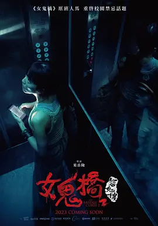

5.8
女鬼桥2：怨鬼楼
The Bridge Curse: Ritual
2023
中国台湾
评分 5.8
导演:
奚岳隆
演员:
林哲熹 / 王渝萱 / 施柏宇 / 胡释安 / 张寗
类型:
恐怖,悬疑,惊悚
剧情简介
文华大学的校园在夜幕之下总带着一股难以言明的压迫感。逆八卦阵形的建筑布局让阴影在走廊间弯折延伸，也让这里的传闻越传越深：有人深夜听见电梯里传来不属于人间的呼吸声，有人在空荡教室里看到一名女子旋转舞动，身形却在灯光闪动间变得扭曲。连裕婷始终记得哥哥昏迷前的那场意外，如今，她接手哥哥留下的 AR 游戏开发，把校园作为最终实测场景，却没想到游戏里那些原本只是“设计”的灵异机制，竟开始在现实里活了过来。她和团队成员在实验途中屡次遭遇诡异事件——黑暗角落里的脚步声紧随其后、监控画面反射出不存在的人影、录音档里出现陌生的低语。林哲熹饰演的学长在调查旧案时隐约触及一些被刻意隐藏多年的禁忌；施柏宇与胡释安所饰演的同学则在实验中逐渐失去判断，仿佛整个校园的气息正逼迫他们陷入更深的幻境。随着裕婷不断追索哥哥意外的真相，逆八卦阵的意义、古老镇煞之术与校园里沉睡的怨念逐渐浮出水面。恐惧并非只来自闹鬼传闻，而是来自那些被压抑许久的情绪与未能说出口的牵挂。当现实与阴界的边界开始模糊，裕婷意识到，她必须直面的不只是一连串灵异现象，更是与哥哥之间残留的未尽之事。影片以层层推进的诡谲氛围，让阴影中的秘密缓慢渗出，最终把所有人推向无法回避的核心真相。